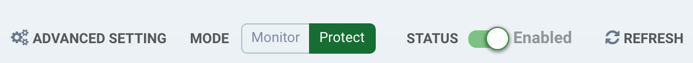
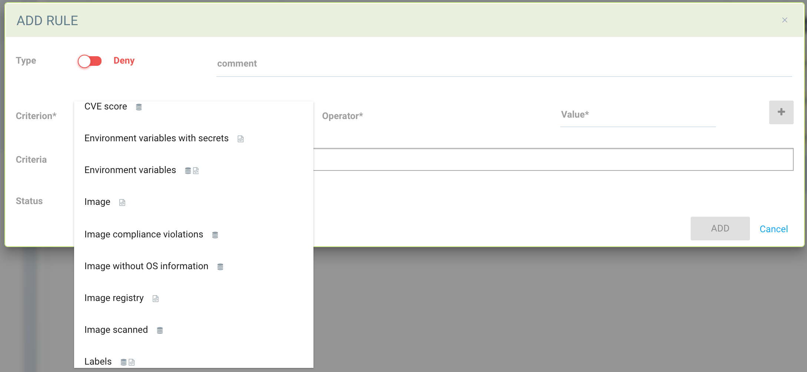

准入控制
控制镜像/容器部署
通过与Kubernetes和OpenShift等编排平台的准入控制集成，SUSE® Security在编排平台的部署管道中发挥着重要作用。每当创建集群资源（如 Deployment）时，集群 apiserver 发出的请求将先传递给其中一个SUSE® Security控制器，根据用户定义的准入控制规则决定是否允许部署，然后才创建该集群资源。SUSE® Security做出的策略决策将传回集群 apiserver 以进行执行。
此功能在Kubernetes 1.9+和OpenShift 3.9+中受支持。在SUSE® Security中使用准入控制功能之前，虽然可以通过传递给集群 apiserver 的`--admission-control`参数来设置准入控制，但建议使用动态准入控制。请参见下面的Kubernetes和OpenShift部分以获取配置。
在SUSE® Security中启用准入控制（Webhook）
准入控制功能默认禁用。请前往策略→的准入控制页面，在SUSE® Security控制台中启用它。

一旦成功启用准入控制功能，将自动创建以下ValidatingWebhookConfiguration资源。要检查它：
kubectl get ValidatingWebhookConfiguration neuvector-validating-admission-webhook示例输出：
NAME CREATED AT
neuvector-validating-admission-webhook 2019-03-28T00:05:09Z在 ValidatingWebhookConfiguration 资源中，SUSE® Security 最重要的信息是集群资源。目前，一旦创建了注册的集群资源，例如 Deployment SUSE® Security，请求将从编排平台的 apiserver 发送到 SUSE® Security 控制器之一，根据 SUSE® Security 策略 → 准入控制页面中的用户定义规则来确定是否允许或拒绝。
如果资源部署被拒绝，将在通知中记录事件。
要测试客户端模式访问的 Kubernetes 连接，请转到高级设置。

对于特殊情况，可能需要使用 NodePort 服务的 URL 访问方法。
准入控制标准
SUSE® Security 支持创建准入控制规则的多种标准。这些包括 CVE 高计数、CVE 名称、镜像标签、imageScanned、名称空间、用户、runAsRoot 等。有两个可能的标准评估来源，镜像扫描和部署 Yaml 文件扫描。如果标准需要镜像扫描，将使用来自注册扫描的扫描结果。如果镜像未被扫描，则不会应用准入控制规则。如果标准需要扫描部署 yaml，将从 Kubernetes 部署中进行评估。某些标准将使用来自镜像扫描或部署 yaml 扫描的结果。
-
CVE 分数是一个需要镜像扫描的标准示例。
-
带有机密的环境变量是一个使用部署 yaml 扫描的标准示例。
-
标签和环境变量是标准的示例，这些标准将同时使用镜像和部署 yaml 扫描结果（逻辑或）来确定匹配。

选择标准后，将显示可能的操作符。点击'`+’按钮以添加每个标准。
在单个规则中使用多个标准 一个准入控制规则中多个标准的匹配逻辑是：
-
在单个规则中，对于不同的标准类型，应用’与'
-
对于同一类型的多个标准（例如多个名称空间、注册表、镜像），
-
对于所有负匹配（"不包含任何"，"不是其中之一"），应用’与'，直到第一个正匹配；
-
在第一个正匹配后，应用’或'
-
与匹配 Pod 标签的示例
apiVersion: apps/v1
kind: Deployment
metadata:
name: iperfserver
namespace: neuvector-1
spec:
replicas: 1
template:
metadata:
labels:
app: iperfserver匹配的规则将是：

与匹配环境变量和秘密的示例
apiVersion: apps/v1
kind: Deployment
metadata:
name: iperfserver
namespace: neuvector-1
labels:
name: iperfserver
spec:
selector:
matchLabels:
name: iperfserver
replicas: 1
template:
metadata:
labels:
name: iperfserver
spec:
containers:
- name: iperfserver
image: nvlab/iperf
env:
- name: env1
value: AIDAJQABLZS4A3QDU576
- name: env2
valueFrom:
fieldRef:
fieldPath: status.podIP
- name: env5
value: AIDAJQABLZS4A3QDU57E
command:
- iperf
- -s
- -p
- "6068"
nodeSelector:
nvallinone: "true"
restartPolicy: Always匹配规则将是：

与扫描结果相关的标准
以下标准与SUSE® Security资产 > 注册表扫描页面中的结果相关：
镜像、镜像扫描、CVE 高计数、CVE 中计数、镜像合规性违规、CVE 名称等。
在SUSE® Security匹配准入控制规则之前，SUSE® Security会从集群 apiserver 检索镜像信息（例如，10.1.127.3:5000/neuvector/toolbox/iperf:latest）（请参阅下文的 apiserver 请求部分）。镜像由注册表服务器（https://10.1.127.3:5000）、储存库（neuvector/toolbox/iperf）和标签（latest）组成。
SUSE® Security使用此信息匹配SUSE® Security资产→注册表扫描页面中的结果，并收集相应的信息，如CVE 名称、CVE 高或中计数等。镜像合规性违规被视为任何包含机密或存在 setuid/setgid 违规的镜像。 如果用户使用来自 Docker 注册表的镜像来创建集群资源，通常注册表服务器信息为空或为 docker.io，而当前 SUSE® Security 正在使用以下硬编码的注册表服务器来匹配注册表扫描结果，而不是空字符串或 docker.io 字符串。当然，如果在注册表扫描页面中定义的支持的 Docker 注册表服务器中还有其他服务器，SUSE® Security 将无法成功获取注册表扫描结果。
如果用户使用来自 Docker 注册表的内置镜像，例如 alpine 或 ubuntu，则有一个名为 library 的隐藏组织名称。当您查看 SUSE® Security 资产 > 注册表扫描页面中的 Docker 内置镜像结果时，储存库名称将是 library/alpine 或 library/ubuntu。目前 SUSE® Security 假设 Docker 注册表中只有一个隐藏的 library 组织名称。如果有多个，SUSE® Security 也将无法成功获取注册表扫描结果。 上述限制也可能适用于其他类型的 Docker 注册表服务器（如果有的话）。
创建自定义标准规则
用户可以创建自定义标准，以根据在镜像 yaml 中找到的常见对象（在部署时扫描）来允许或阻止部署。选择要使用的对象，例如 imagePullSecrets 和匹配值，例如 exists。还建议使用额外的标准来进一步定位规则，例如名称空间、PSP/PSA、CVE 条件等。

标准说明
带有磁盘图标的标准要求对镜像进行扫描（请参见注册表扫描），而带有文件图标的标准将扫描部署 yaml。如果列出了两个图标，则匹配将适用于任一（或）。如果某个标准要求对镜像进行扫描，但该镜像未被扫描，则该规则的该部分将被忽略（即规则被绕过，或者如果部署 yaml 也被列出，则仅使用部署 yaml 进行匹配）。为了防止未扫描的镜像绕过规则，请参见下面的镜像扫描标准。
-
添加自定义标准。从下拉菜单中选择对象。所有自定义标准支持 exists 和 does not exist 操作符。对于允许值的项，可以输入额外的运算符和该值。值可以是静态的，用逗号分隔，并且可以包含通配符。
-
允许权限升级。如果容器允许权限升级，可以通过将操作设置为拒绝来阻止。
-
高严重性 CVE 的数量。这会获取镜像（注册表）扫描的结果，并匹配高严重性（CVSS 分数为 7 或更高）的数量。可以添加额外的运算符，以限制在某个天数之前报告的 CVE，从而为最近的 CVE 提供修复时间。
-
具有修复的高严重性 CVE 的数量。这会获取镜像（注册表）扫描的结果，并匹配高严重性（CVSS 分数为 7 或更高）的 CVE，同时检测该 CVE 是否有可用的修复。如果仅计划阻止高 CVE 的部署，前提是应该应用修复，请选择此项。可以添加额外的运算符，以限制在某个天数之前报告的 CVE，从而为最近的 CVE 提供修复时间。
-
中等严重性 CVE 的数量。这会获取镜像（注册表）扫描的结果，并匹配中等严重性（CVSS 分数在 4 到 6 之间）的数量。可以添加额外的运算符，以限制在某个天数之前报告的 CVE，从而为最近的 CVE 提供修复时间。
-
CVE 名称。这会匹配特定的 CVE 名称（例如 CVE-2023-23914、2023-23914、23914 或唯一文本），多个名称用逗号分隔。
-
CVE 分数。配置最低分数以及匹配或超过最低 CVSS 分数的 CVE 数量。
-
包含机密的环境变量。如果部署的 yaml 或镜像扫描结果包含（或不包含）任何包含机密的环境变量。请参见下面的机密匹配标准。
-
环境变量。使用此功能来要求或排除部署 YAML 或镜像扫描中的某些环境变量。
-
映像。匹配特定的映像名称，通常与规则的其他标准结合使用。
-
映像合规性违规。如果映像（注册表）扫描结果中存在任何合规性违规，则匹配。有关合规性检查的详细信息，请参见 合规性。
-
没有操作系统信息的映像。如果映像（注册表）扫描结果无法检索操作系统信息，则匹配。
-
映像注册表。匹配特定的映像注册表名称。通常用于限制来自某些注册表的部署或仅要求来自某些批准的注册表的部署。通常与其他标准一起使用，例如名称空间。
-
已扫描的映像。要求对映像进行扫描。通常用于确保所有映像都经过扫描，以确保可以将基于扫描的标准（例如高 CVE）应用于部署。
-
已签名的映像。要求通过 Sigstore/Cosign 的集成对映像进行签名。此标准仅检查扫描结果中是否存在任何验证者。
-
映像 Sigstore 验证者。要求映像由特定的 Sigstore 信任根名称签名，如在资产 → Sigstore 验证者中配置。检查扫描结果中的验证者是否与规则配置中的验证者匹配。
-
标签。要求在部署 yaml 或镜像扫描结果中存在一个或多个标签。
-
模块。要求或排除某些模块（包、库）在镜像（注册表）扫描结果中存在。
-
挂载卷。通常用于防止某些卷被挂载。
-
名称空间。允许或限制某些名称空间的部署。可以独立使用，但通常与其他条件结合以限制规则匹配到名称空间。
-
PSP 最佳实践。PSP 的等效规则（注意：PSP 在 kubernetes 1.25+ 中完全移除，但此 SUSE® Security 等效项仍可在 1.25+ 中使用）。包括以特权身份运行、以根用户身份运行、共享主机的 PID 名称空间、共享主机的 IPC 名称空间、共享主机的网络、允许特权提升。
-
资源限制配置（RLC）。要求为处理器限制/请求、内存限制/请求配置资源限制，并可以要求操作员大于或小于等于配置的资源值。
-
以特权身份运行。通常用于限制或阻止特权容器的部署。
-
以根用户身份运行。通常用于限制或阻止以根用户身份运行的容器的部署。
-
服务账户绑定高风险角色。可以根据多个标准匹配，这些标准可能代表高风险服务账户角色，包括列出机密、对工作负载执行任何操作、修改RBAC资源、创建工作负载资源以及允许进入容器。
-
共享主机的 IPC 名称空间。匹配 IPC 名称空间。
-
共享主机的网络。允许或不允许部署共享主机的网络。
-
-
共享主机的 PID 名称空间。匹配 PID 名称空间。
-
-
用户。允许或不允许在运行时定义的 由kubernetes绑定的用户，在userInfo字段中可见。注意：yaml（上传）审计功能将无法检查此项，因为它在运行时绑定。
-
用户组。允许或不允许在运行时定义的 由kubernetes绑定的用户组，在userInfo字段中可见。 注意：yaml（上传）审计功能将无法检查此项，因为它在运行时绑定。
-
违反PSA策略。如果部署违反了受限或基线PSA Pod安全标准（相当于kubernetes 1.25+中的PSA定义），则匹配。
机密检测。
检测机密，例如在环境变量中，使用以下正则表达式匹配：
Rule{Description: "Password.in.YML",
Expression: `(?i)(password|passwd|api_token)\S{0,32}\s*:\s*(?-i)([0-9a-zA-Z\/+]{16,40}\b)`, ExprFName: `.*\.ya?ml`, Tags: []string{share.SecretProgram, "yaml", "yml"},
Suggestion: msgReferVender},在风险报告页面中，当检测到机密时，警报格式将显示为"${variable}=${value}"的常规输出信息。例如在下面的图片中，可以看到变量"env1=AIDAJQ…"。
检测到的机密类型列表可以在这里找到。
准入控制模式。
SUSE® Security支持两种模式 - 监控和保护。
-
监控：如果决策被拒绝，事件日志中会有警报信息。在这种情况下，集群 apiserver 被允许成功创建资源。注意：即使规则操作是拒绝，在监控模式下这只会发出警报。
-
保护：这是一种内联保护模式。一旦决策被拒绝，集群资源将无法成功创建，并且事件将被记录。
准入控制规则
规则可以是允许（白名单）或拒绝（黑名单）规则。规则按显示顺序进行评估，从上到下。允许规则优先评估，并且用于定义拒绝规则的例外（子集）。如果资源部署不匹配任何规则，默认操作是允许该部署。
有两个预配置的规则应被允许，以启用 Kubernetes 系统容器和 SUSE® Security 部署。
准入控制规则适用于所有创建 pod 的资源（例如，部署、守护程序集、副本集等）。
对于准入控制规则，匹配顺序为：
-
默认允许规则（例如，系统名称空间）
-
联邦允许规则（如果存在）
-
联邦拒绝规则（如果存在）
-
应用于 CRD 的允许规则（如果存在）
-
应用于 CRD 的拒绝规则（如果存在）
-
用户定义的允许规则
-
用户定义的拒绝规则
-
如果请求不符合上述任何规则的标准，则允许该请求
在每个匹配阶段（1~7），规则的顺序无关紧要。只要请求符合某个规则的标准，就会采取相应的操作（允许或拒绝），并允许或拒绝该请求。
联邦扫描结果在准入控制规则中
主集群可以扫描指定为联邦注册表的注册表/仓库。来自这些注册表的扫描结果将同步到所有受管（远程）集群。这使得在受管集群控制台中显示扫描结果成为可能，并且可以在受管集群的准入控制规则中使用这些结果。注册表只需扫描一次，而不是每个集群都扫描，从而减少了处理器/内存和网络带宽的使用。有关更多详细信息，请参见 多集群 部分。
配置 Sigstore/Cosign 验证器以要求映像签名
有关配置验证器的信息，请参见 本节。
查错
如果遇到错误并且您可以访问主节点，您可以检查 kube-apiserver 日志以搜索准入 webhook 事件。示例：
W0406 13:16:49.012234 1 admission.go:236] Failed calling webhook, failing open neuvector- validating-admission-webhook.neuvector.svc: failed calling admission webhook "neuvector-validating- admission-webhook.neuvector.svc": Post https://neuvector-svc-admission- webhook.neuvector.svc:443/v1/validate/1554514310852084622-1554514310852085078?timeout=30s: dial tcp: lookup neuvector-svc-admission-webhook.neuvector.svc on 8.8.8.8:53: no such host上述日志表明，集群 kube-apiserver 无法成功将请求发送到 SUSE® Security webhook，因为它无法解析 neuvector-svc-admission-webhook.neuvector.svc 名称。
W0405 23:43:01.901346 1 admission.go:236] Failed calling webhook, failing open neuvector- validating-admission-webhook.neuvector.svc: failed calling admission webhook "neuvector-validating- admission-webhook.neuvector.svc": Post https://neuvector-svc-admission-webhook.neuvector.svc:443/v1/validate/1554500399933067744-1554500399933068005?timeout=30s: net/http: request canceled while waiting for connection (Client.Timeout exceeded while awaiting headers)上述日志表明，集群 kube-apiserver 无法成功将请求发送到 SUSE® Security webhook，因为它用错误的 IP 地址解析了 neuvector-svc-admission-webhook.neuvector.svc 名称。这也可能表明 API 服务器和控制器节点之间存在网络连接或防火墙问题。
W0406 01:14:48.200513 1 admission.go:236] Failed calling webhook, failing open neuvector- validating-admission-webhook.xyz.svc: failed calling admission webhook "neuvector-validating- admission-webhook.xyz.svc": Post https://neuvector-svc-admission- webhook.xyz.svc:443/v1/validate/1554500399933067744-1554500399933068005?timeout=30s: x509: certificate is valid for neuvector-svc-admission-webhook.neuvector.svc, not neuvector-svc-admission- webhook.xyz.svc上述日志表明，集群 kube-apiserver 可以成功将请求发送到 SUSE® Security webhook，但 caBundle 中的证书是错误的。
W0404 23:27:15.270619 1 admission.go:236] Failed calling webhook, failing open neuvector- validating-admission-webhook.neuvector.svc: failed calling admission webhook "neuvector-validating- admission-webhook.neuvector.svc": Post https://neuvector-svc-admission- webhook.neuvector.svc:443/v1/validate/1554384671766437200-1554384671766437404?timeout=30s: service "neuvector-svc-admission-webhook" not found上述日志表明，集群 kube-apiserver 无法成功将请求发送到 SUSE® Security webhook，因为未找到 neuvector-svc-admission-webhook 服务。
审查准入控制配置
首先，检查您的 Kubernetes 或 OpenShift 版本。Kubernetes 1.9+ 和 OpenShift 3.9+ 支持准入控制。 对于 OpenShift，请确保您已编辑 master-config.yaml 文件以添加 MutatingAdmissionWebhook 配置，并重启主 API 服务器。
检查 Clusterrole
kubectl get clusterrole neuvector-binding-admission -o json确保动词包括：
"get",
"list",
"watch",
"create",
"update",
"delete"然后检查：
kubectl get clusterrole neuvector-binding-app -o json确保动词包括：
"get",
"list",
"watch",
"update"如果上述动词未列出，测试按钮将失败。
检查 Clusterrolebinding
kubectl get clusterrolebinding neuvector-binding-admission -o json确保 ServiceAccount 设置正确：
"subjects": [
{
"kind": "ServiceAccount",
"name": "default",
"namespace": "neuvector"检查 Webhook 配置
kubectl get ValidatingWebhookConfiguration --as system:serviceaccount:neuvector:default -o yaml > nv_validation.txtnv_validation.txt 的内容应与以下内容类似：
点击这里查看详细信息
apiVersion: v1
items:
- apiVersion: admissionregistration.k8s.io/v1beta1
kind: ValidatingWebhookConfiguration
metadata:
creationTimestamp: "2019-09-11T00:51:08Z"
generation: 1
name: neuvector-validating-admission-webhook
resourceVersion: "6859045"
selfLink: /apis/admissionregistration.k8s.io/v1beta1/validatingwebhookconfigurations/neuvector-validating-admission-webhook
uid: 3e1793ed-d42e-11e9-ba43-000c290f9e12
webhooks:
- admissionReviewVersions:
- v1beta1
clientConfig:
caBundle: {.........................}
service:
name: neuvector-svc-admission-webhook
namespace: neuvector
path: /v1/validate/{.........................}
failurePolicy: Ignore
name: neuvector-validating-admission-webhook.neuvector.svc
namespaceSelector: {}
rules:
- apiGroups:
- '*'
apiVersions:
- v1
- v1beta1
operations:
- CREATE
resources:
- cronjobs
- daemonsets
- deployments
- jobs
- pods
- replicasets
- replicationcontrollers
- services
- statefulsets
scope: '*'
- apiGroups:
- '*'
apiVersions:
- v1
- v1beta1
operations:
- UPDATE
resources:
- daemonsets
- deployments
- replicationcontrollers
- statefulsets
- services
scope: '*'
- apiGroups:
- '*'
apiVersions:
- v1
- v1beta1
operations:
- DELETE
resources:
- daemonsets
- deployments
- services
- statefulsets
scope: '*'
sideEffects: Unknown
timeoutSeconds: 30
kind: List
metadata:
resourceVersion: ""
selfLink: ""如果您看到类似 "Error from server …." 或 "… is forbidden" 的内容，这意味着 NV 控制器服务账户没有 ValidatingWebhookConfiguration 资源的访问权限。在这种情况下，通常意味着 neuvector-binding-admission clusterrole/clusterrolebinding 存在一些问题。删除并重新创建 neuvector-binding-admission clusterrole/clusterrolebinding 通常是最快的解决方法。
测试准入控制连接按钮
在 SUSE® Security 控制台的策略 → 准入控制中，转到更多操作 → 高级设置，并单击 "测试" 按钮。SUSE® Security 将修改服务 neuvector-svc-admission-webhook，并查看我们的 webhook 服务器是否能接收更改通知或是否失败。
-
运行
kubectl get svc neuvector-svc-admission-webhook -n neuvector -o yaml输出应如下所示：
apiVersion: v1 kind: Service metadata: annotations: ................... creationTimestamp: "2019-09-10T22:53:03Z" labels: echo-neuvector-svc-admission-webhook: "1568163072" //===> from last test. could be missing if it's a fresh NV deployment tag-neuvector-svc-admission-webhook: "1568163072" //===> from last test. could be missing if it's a fresh NV deployment name: neuvector-svc-admission-webhook namespace: neuvector ................... spec: clusterIP: 10.107.143.177 ports: - name: admission-webhook port: 443 protocol: TCP targetPort: 20443 selector: app: neuvector-controller-pod sessionAffinity: None type: ClusterIP status: loadBalancer: {} -
现在单击准入控制的高级设置 → "测试" 按钮。等待直到显示成功或失败。SUSE® Security 将隐式修改服务 neuvector-svc-admission-webhook 的 tag-neuvector-svc-admission-webhook 标签。
-
等待控制器内部操作。如果 SUSE® Security webhook 服务器接收到来自 kube-apiserver 的关于此服务更改的更新请求，SUSE® Security 将把服务 neuvector-svc-admission-webhook 的 echo-neuvector-svc-admission-webhook 标签修改为与 tag-neuvector-svc-admission-webhook 标签相同的值。
-
运行
kubectl get svc neuvector-svc-admission-webhook -n neuvector -o yaml输出应如下所示：
apiVersion: v1 kind: Service metadata: annotations: ............. creationTimestamp: "2019-09-10T22:53:03Z" labels: echo-neuvector-svc-admission-webhook: "1568225712" //===> changed in step 3-3 after receiving request from kube-apiserver tag-neuvector-svc-admission-webhook: "1568225712" //===> changed in step 3-2 because of UI operation name: neuvector-svc-admission-webhook namespace: neuvector ................. spec: clusterIP: 10.107.143.177 ports: - name: admission-webhook port: 443 protocol: TCP targetPort: 20443 selector: app: neuvector-controller-pod sessionAffinity: None type: ClusterIP status: loadBalancer: {} -
测试后，如果标签 tag-neuvector-svc-admission-webhook 的值没有变化，这意味着控制器服务未能更新 neuvector-svc-admission-webhook 服务。检查 neuvector-binding-app clusterrole/clusterrolebinding 是否配置正确。
-
测试后，如果标签 tag-neuvector-svc-admission-webhook 的值发生变化，但标签 echo-neuvector-svc-admission-webhook 的值没有变化，这意味着 webhook 服务器没有收到来自 kube-apiserver 的请求。kube-apiserver 的请求无法到达 SUSE® Security webhook 服务器。造成这种情况的原因可能是网络连接问题、防火墙阻止请求（在默认端口443上）、控制器解析错误的IP或其他原因。